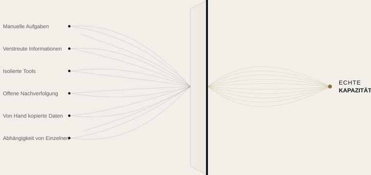

Automatisierung
Wir machen aus wiederkehrenden Aufgaben automatische Abläufe – nach Regeln, die wir gemeinsam mit Ihnen festlegen.
ERST VERSTEHEN, DANN VORSCHLAGEN
Die meisten Unternehmen brauchen keine weiteren Tools. Sie müssen wissen, wo ihnen Zeit, Informationen und Aufmerksamkeit verloren gehen.
WAS WIR TUN
Wir finden heraus, wo Ihr Unternehmen Kapazität verliert, und setzen sie frei – mit Automatisierung, vernetzten Tools und angewandter künstlicher Intelligenz, wo es sinnvoll ist.

UNSERE LEISTUNGEN
Wir machen aus wiederkehrenden Aufgaben automatische Abläufe – nach Regeln, die wir gemeinsam mit Ihnen festlegen.
Für das, was eine Regel nicht löst: KI stärkt Ihr Team, sie ersetzt es nicht.
Wir verbinden Ihre Tools, damit Informationen von einem zum anderen fließen, ohne dass jemand eingreifen muss.
WIE WIR ARBEITEN
Wir gehen nicht von einer Technologie aus, sondern von einer Frage: Wo verliert Ihr Unternehmen Kapazität, und warum?
Wir lernen Ihr Unternehmen von innen kennen und sehen uns an, wie Ihr Team jeden Tag arbeitet.
Wir finden heraus, wo Zeit, Informationen oder potenzielle Kunden verloren gehen, und warum.
Wir sagen Ihnen, was wir ändern würden und was man besser so lässt.
Wir setzen es um, testen es mit Ihnen und passen es an, bis es so funktioniert, wie Ihr Team es braucht.
DER ERSTE SCHRITT
In einer Woche analysieren wir, wie Ihr Unternehmen arbeitet, und übergeben Ihnen eine klare Übersicht: was Kapazität bindet, was sich automatisieren lässt und in welcher Reihenfolge. Der Bericht gehört Ihnen, wie auch immer Sie sich entscheiden.
Jeder Ablauf in verständlicher Sprache erklärt.
Konten, Tools und Daten gehören Ihnen.
Sie sehen, was jede Automatisierung getan hat und wann.
Wenn wir nicht mehr zusammenarbeiten, gehört weiterhin alles Ihnen.
BEISPIELE NACH BRANCHE
Beispielhafte Szenarien auf Basis alltäglicher Situationen. Wir arbeiten mit Unternehmen aus allen Branchen, in ganz Spanien.
Alles läuft weiter, auch wenn niemand mehr im Büro ist.